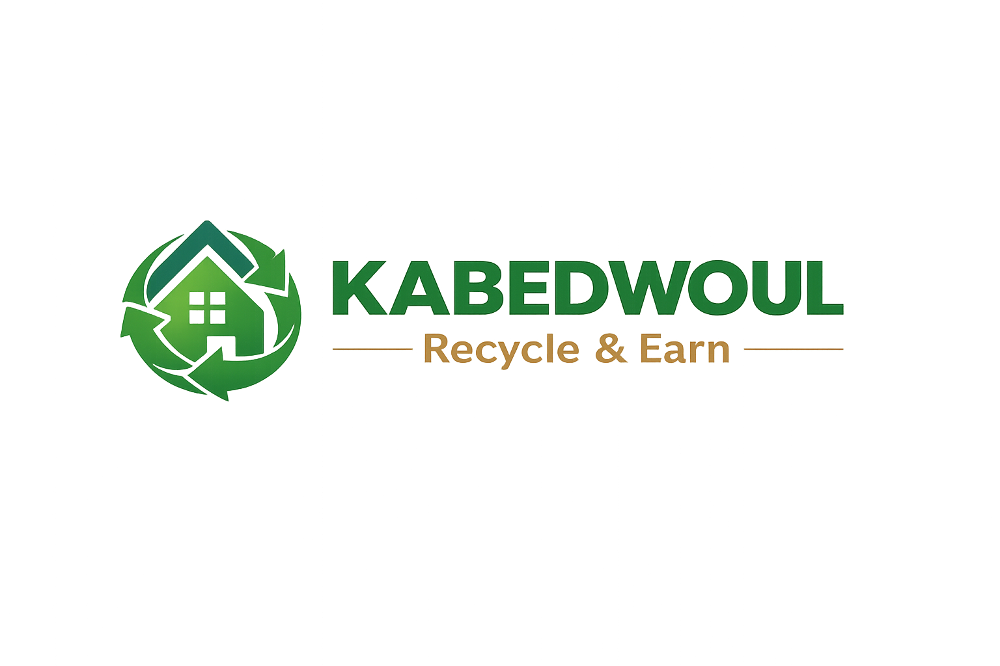
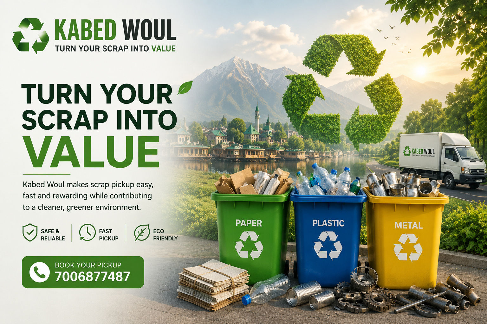

Kabed Woul provides smart doorstep scrap pickup services. Sell your recyclable waste easily and help keep Kashmir clean.
Book a Pickup
Kabed Woul connects customers with trusted scrap contractors. Our goal is to make scrap collection easy, organized and eco-friendly.
Helping keep Srinagar clean through responsible recycling.
Book a pickup from your home in just a few clicks.
Pickup requests are quickly forwarded to our contractor.
We provide fast, reliable and eco-friendly scrap collection services.
Doorstep pickup of household and office scrap.
Responsible recycling to protect our environment.
Pickup service for schools, offices and businesses.